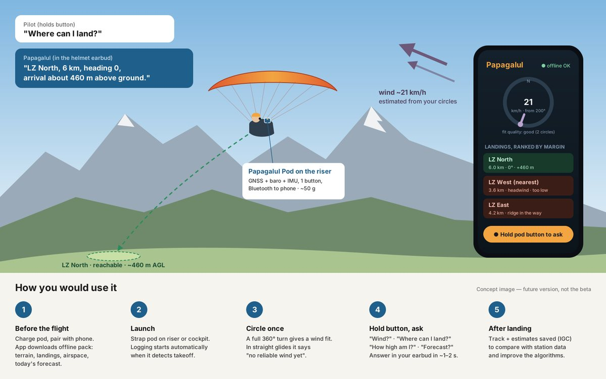
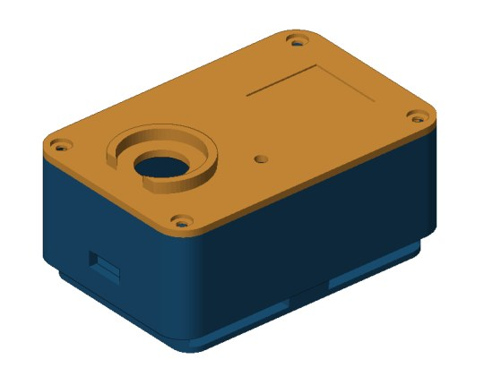
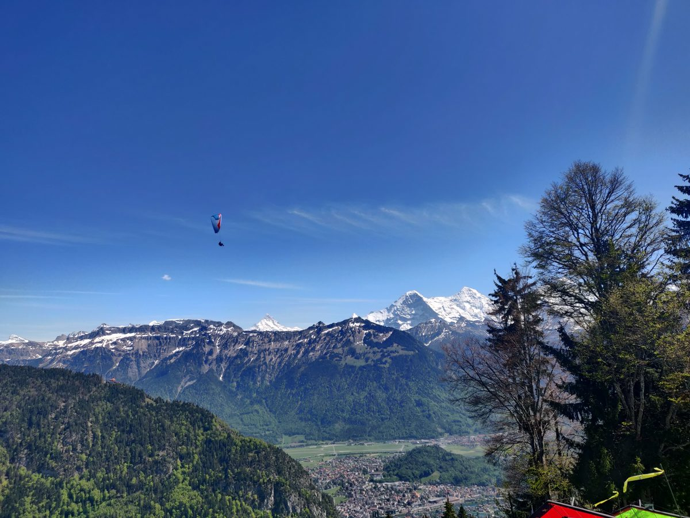

Predicting vaccine responders
BTM / GSEA profiling of sheep whole blood across adjuvant regimens, and models that tell high from low antibody responders using early RNA-seq, TF activity, repertoire and MHC variants.
Molecular biologist turned bioinformatician. I read cells one at a time, across species, and build tools that turn genomes into something people can explore.
Biology · Immunology · Genomics · Statistics · Machine learning · Protein language models · Metabolism & nutrition · Paragliding
Computational biologist and immunologist · Single-cell & systems immunology · Non-model species bioinformatics
Computational immunologist and molecular biologist working on transcriptomics and genomics across model and domestic species, from zebrafish heart regeneration to obesity genomics. I build and run HPC workflows and statistical models that turn bulk and single-cell data into biological insight.
Institute of Virology and Immunology (IVI) & Vetsuisse Faculty, University of Bern
Laboratory of Systems Biology and Genetics, EPFL & SIB, Lausanne
Developmental Biology and Regeneration, Institute of Anatomy, University of Bern
Graduate School for Cellular and Biomedical Sciences, University of Bern
University of Bern
ENS (ISCIII) with CNIO, Madrid · Thesis: GATK pipeline for rare-disease variant detection (IIS-Fundación Jiménez Díaz)
Universidad Autónoma de Madrid · Thesis: age-related NUMTs in Drosophila genomes (InnoHealth group)
Universidad de Alcalá, Madrid · Thesis: antibiotic-resistance genes in environmental waters, University of Hertfordshire (UK)
Python · R / Shiny · Bash · Git
Scanpy · Seurat · scverse · ESM · CellBender · STAR(solo) · Salmon · edgeR · GATK
MiXCR · IPD-MHC
Statistical modelling and machine learning in Python (scikit-learn) and R (caret)
Linux · SLURM · Apptainer · Docker · GPU
ggplot2 · circos · Cytoscape · Shiny · Streamlit
From raw FASTQ to figures: gathering, cleaning, integrating and explaining transcriptomic data across species.
BTM / GSEA profiling of sheep whole blood across adjuvant regimens, and models that tell high from low antibody responders using early RNA-seq, TF activity, repertoire and MHC variants.
My own pipeline estimating cell-type fractions in 170 blood samples, benchmarked against CIBERSORTx, MuSiC and Bisque.
MHC allele expression with a custom IPD-MHC reference and TCR / BCR repertoires with MiXCR and a custom sheep IMGT library.
Computational vs manual quantification of SARS-CoV-2 nucleocapsid immunolabelling in infected mice. Shared first author.
Nuclear mitochondrial insertions across inbred Drosophila genomes, with Unix / Python / R pipelines and circos plots.
Workflow comparing public RNA-seq from zebrafish heart injury models to find shared and model-specific regeneration programmes, interpreted with GO-based integrated networks. Published in Scientific Reports (2023).
Code on GitHub →Pipeline capturing miRNA, piRNA, tRNA, rRNA and other annotated species from Ensembl, NCBI and more, so new RNA classes plug into the same workflow.
Variant calling on zebrafish RNA-seq to explore energy-supply genes and mitochondrial variants behind metabolic disturbances.
Integrated single-cell and single-nuclei data from omental and subcutaneous fat (SVF and whole tissue) with neural-network embeddings, tuned with UMAP, PyMDE, PCA and clustering.
Used the adipose atlas as a reference to deconvolve bulk RNA-seq cohorts and test whether disease tracks shifts in cell-type composition.
Linked gene expression to chromatin accessibility in a mouse precursor population, re-calling peaks per cluster with MACS2 and integrating with MultiVI.
End-to-end workflow, from reference genome building to integration, comparing the mononuclear phagocyte system in blood, PBMC and lymph node of cow, horse, pig, dog, human and mouse.
Secure, customisable R Shiny apps for exploring and downloading results.
Live example →SLURM-managed Linux clusters driven interactively from VS Code and RStudio, running everything from QC to custom visualisation.
Our home beekeeping project: we keep hives to learn about bees, beekeeping and how a colony works. The hives give us enough honey that we haven't needed to buy any in ages.
A small deep-learning project to set up and stress-test local GPU, SSD and RAM resources.
A map, database and forecasting tool for paragliding flights in Switzerland. Weather models and public data are combined to predict a thermal factor square by square across the terrain.
The idea behind the model: picture the land covered by a layer of honey. Where the warm layer gathers and drips upward is where thermals release. Each cell is scored on slope aspect (N, E, S, W), sun exposure through the day, ground cover, cloud cover and wind, and the result is simulated as a fluid.
Training now for the paragliding tandem licence, so I can take passengers up with me. Next, teaching at paragliding schools.
A web app to read about genome variants, learn how to analyse your own genome, and see the risks when several variants occur together.
Follows on from the Variant Atlas. Profiles for cancer, tumour-free, relapse, obesity and other conditions are embedded in one space, so you can compare your own profile with them if you have one.
A voice flight assistant for paragliding. Hold one button on a small pod on the riser and ask "Wind?" or "Where can I land?"; the answer comes back in your helmet earbud within a second or two.
The language model only chooses which tool to call. Every number the pilot hears comes from deterministic, testable code.
Beta 0.1 is tested on simulated flights and synthetic terrain. Real IGC tracks, a landing database, forecasts and speech are next.


Botos-Rogozsan MA, Mitrovic J, Brito F, Mohn U, Neulen ML, Summerfield A
Kozarac N*, Botos M*, Burgener L*, de Brot S, … Benarafa C, Grau-Roma L
Baillou A, Botos M, Oberhaensli S, Cvitas I, … Marti E, Talker SC
Baillou A, Auray G, Brito F, Botos M, Huber A, Summerfield A, Talker SC
Botos MA, Arora P, Chouvardas P, Mercader N
García-Poyatos C, Cogliati S, Calvo E, … Botos M, … Mercader N, Enríquez JA
Sande-Melón M, Marques IJ, … Botos MA, … Mercader N
Sanz-Morejón A, García-Redondo AB, … Botos MA, … Mercader N
From summer 2027 I'm ready for a new position, in industry, academia or elsewhere, anywhere I can keep applying my skills and working with biological data: bioinformatics, single-cell and genomics, machine learning for biology.
Institute of Virology and Immunology (IVI)
Sensemattstrasse 293, 3147 Mittelhäusern (Bern)

